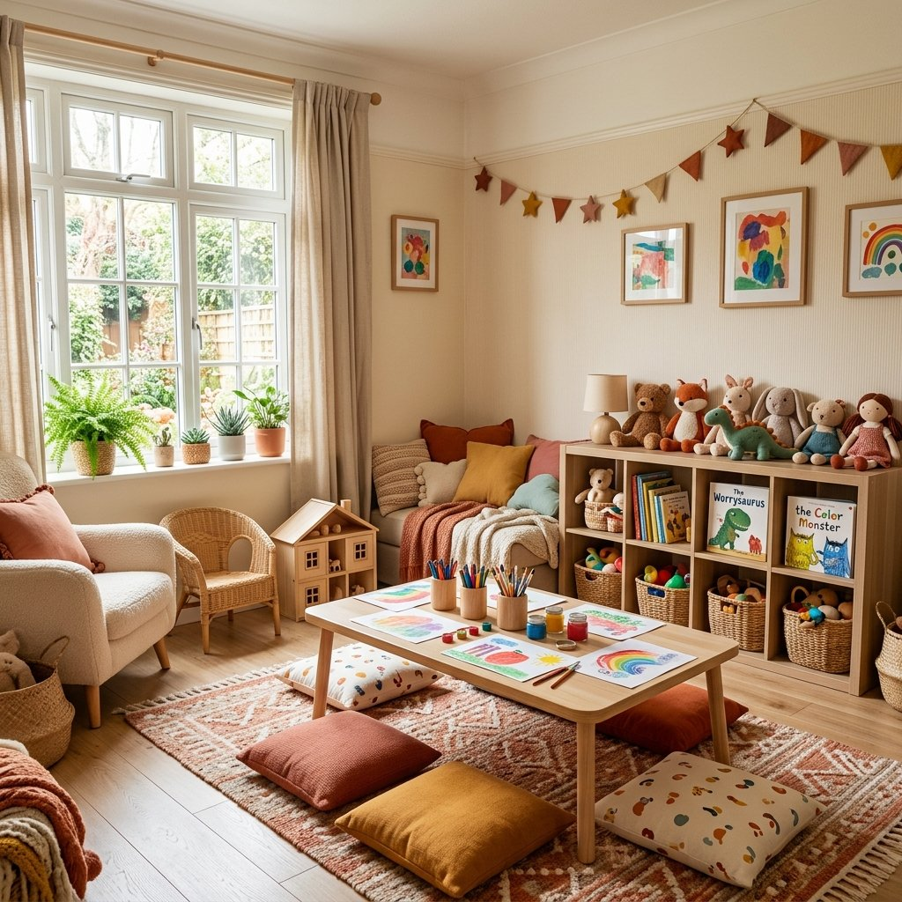

טיפול רגשי למבוגרים — בגישת APT
טיפול אישי לעיבוד טראומה, חרדה ודפוסים חוזרים, בגישה מבוססת-קשר. בכפר רתמים ובזום לכל הארץ.
מה זה טיפול רגשי למבוגרים
טיפול רגשי הוא עבודה משותפת עם מטפלת מקצועית על מה שמרגיש כבד, מבלבל או כואב — כדי לעבד אותו ולמצוא דרך קדימה.
בגישת APT (Authentic Path Therapy) אנחנו עובדים על הדפוסים שמחזיקים אתכם במקומות שלא משרתים אתכם, מתעמקים במקור הקושי, ומאתרים את מה שאפשר לשנות. תהליך מובנה, בקצב שמתאים לכל מטופל.

לא צריך להיות "בשבר" כדי לפנות
אנשים פונים לטיפול ממגוון סיבות — כולן תקפות.
מחשבות שלא נרגעות, גוף שמגיב, שינה משובשת — הטיפול מחפש את המקור.
גירושים, פרידה, אובדן קרוב, שינוי חד — ליווי מקצועי בתקופות הקשות.
"שוב אני עושה את אותו הדבר." זיהוי הדפוס, הבנת השורש, וכלים לשינוי.
בזוגיות, בהורות, בעבודה — עבודה על יחסים מתחילה מעבודה על עצמנו.
גם בלי משבר. להכיר את עצמכם טוב יותר ולחיות עמוק יותר.
טיפול מלא ועמוק מכל מקום בארץ — בקצב ובנוחות שלכם.